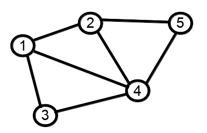
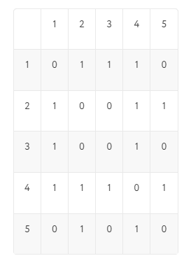
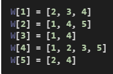

Представление графов в памяти – это способ хранения информации о ребрах графа, позволяющий решать следующие задачи:
1) Для двух данных вершин u и b проверить, соединены ли вершины u и v ребром.
2) Перебрать все ребра, исходящие из данной вершины u.
При этом способ хранения графов в памяти должен учитывать возможности работы с ориентированными и неориентированными графами. По умолчанию будем предполагать, что хранимый граф является простым, но можно рассмотреть вопрос и о представлении графов с петлями и кратными ребрами.
Рассмотрим следующий граф:

рис.4
При представлении графа матрицей смежности информация о ребрах графа хранится в квадратной матрице (двумерном списке), где элемент A[i][j] равен1, если ребра i и j соединены ребром и равен 0 в противном случае. Для данного примера матрица смежности будет выглядеть так:

рис.5
Если граф неориентированный, то матрица смежности всегда симметрична относительно главной диагонали.
При использовании матрицы смежности удобно проверять соединены ли две вершины ребром – это просмотр одного элемента матрицы A[i][j], но сложнее перебирать все ребра, исходящие из данной вершины (для этого необходимо перебрать все оставшиеся вершины и проверить, соединены ли они ребром). Также матрица смежности требует памяти и может оказаться неэффективным способом хранения дерева или разреженных графов.
При представлении графа списками смежности для каждой вершины i хранится список W[i] смежных с ней вершин. Для рассмотренного примера списки будут такими:

рис.6
Таким образом, весь граф можно представить одним списком, состоящим из вложенных списков смежности вершин.